SharePoint
1. SharePoint admin center
Je kan het SharePoint admin center op twee manieren openen:
1.1. Via URL
Je kan rechtstreeks naar het SharePoint Admin Center gaan door naar de volgende URL te surfen: https://abcd-admin.sharepoint.com. Vervang abcd door je eigen onmicrosoft.com-domein.
Bijvoorbeeld: als je account voornaam.achternaam@sz6m.onmicrosoft.com is, dan wordt je SharePoint Admin-URL https://sz6m-admin.sharepoint.com.
1.2. Via het admin center
- Ga naar het hoofd-Microsoft 365 Admin Center: https://admin.microsoft.com.
- Klik in het linkermenu op "Show all"
- Scroll helemaal naar beneden en klik onder Admin centers op SharePoint.
Je bevindt je nu in het SharePoint Admin Center.
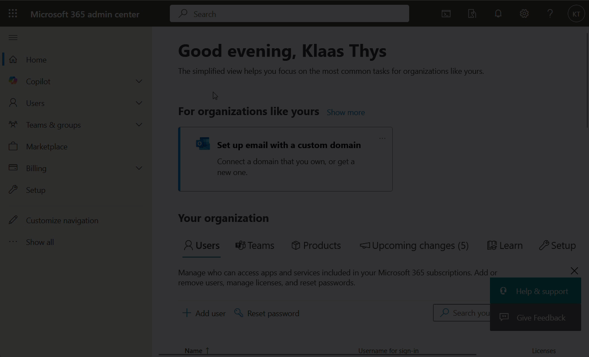
2. Nieuwe SharePoint-site
Je kan op verschillende manieren een nieuwe SharePoint-site aanmaken:
-
Een Microsoft 365-groep aanmaken in Entra ID. Wanneer je een Microsoft 365-groep aanmaakt, wordt automatisch een bijbehorende SharePoint-site aangemaakt (samen met een gedeelde mailbox en een gedeelde agenda).
-
Gebruik de knop “Create” in het SharePoint Admin Center om een team site aan te maken. Een team site maakt ook een Microsoft 365-groep met een bijbehorende SharePoint-site aan (en dus ook een gedeelde mailbox en gedeelde agenda).
-
Als je een SharePoint-site wil aanmaken zonder gedeelde agenda, gedeelde mailbox of Microsoft 365-groep, maak je als volgt een standalone SharePoint-site aan:
2.1. Aanmaken
- Klik op de knop Create.
- Scroll naar beneden en selecteer Browse more sites.
- Zorg dat Team site geselecteerd is onder Choose a template.
- Geef een Site name in. Het siteadres wordt automatisch gegenereerd.
- Kies een Entra-gebruiker als Primary administrator. Deze gebruiker kan de machtigingen van de site beheren.
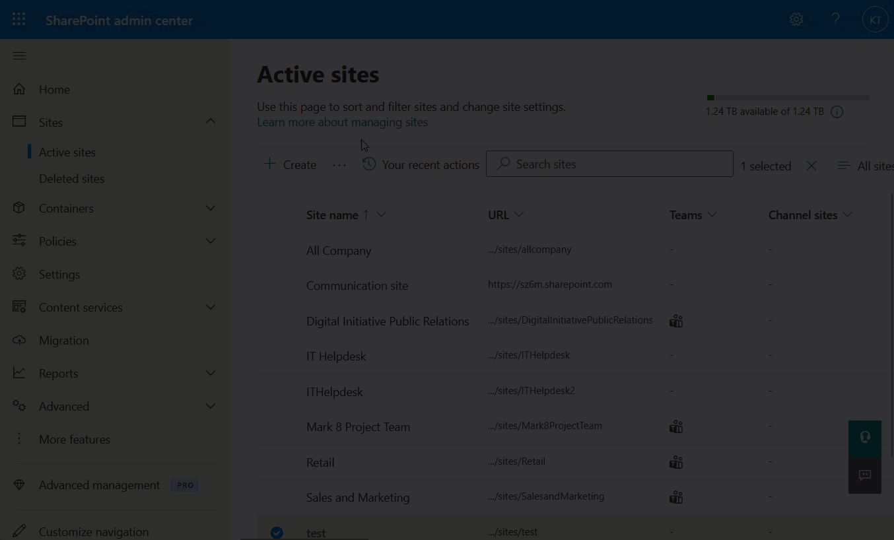
De URL van de SharePoint-site moet uniek zijn.
2.2. Taal en tijdzone
- Stel de taal en tijdzone (time zone) voor de SharePoint-site in
- Klik op Create site
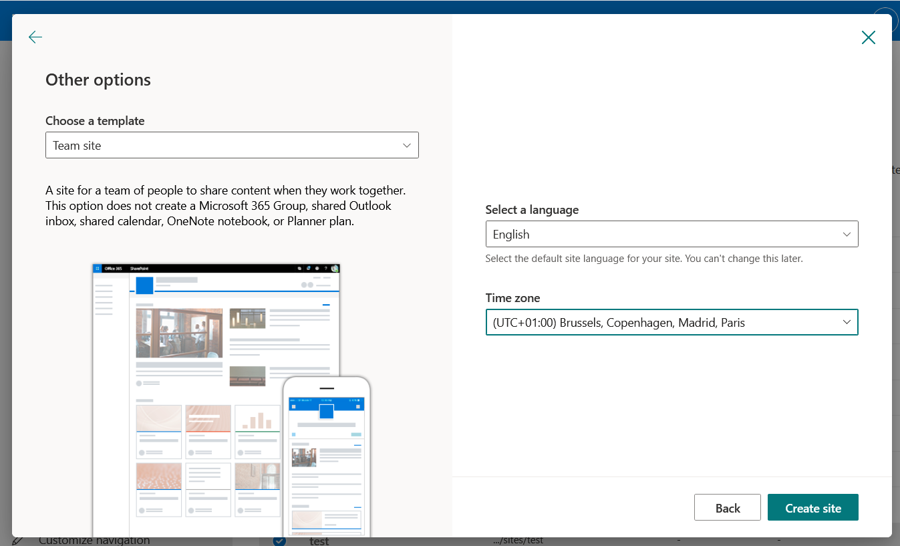
2.3. De SharePoint-site openen
Je kan de SharePoint-site openen door met de rechtermuisknop de URL te kopiëren en in je browser te plakken om naar de site te navigeren.
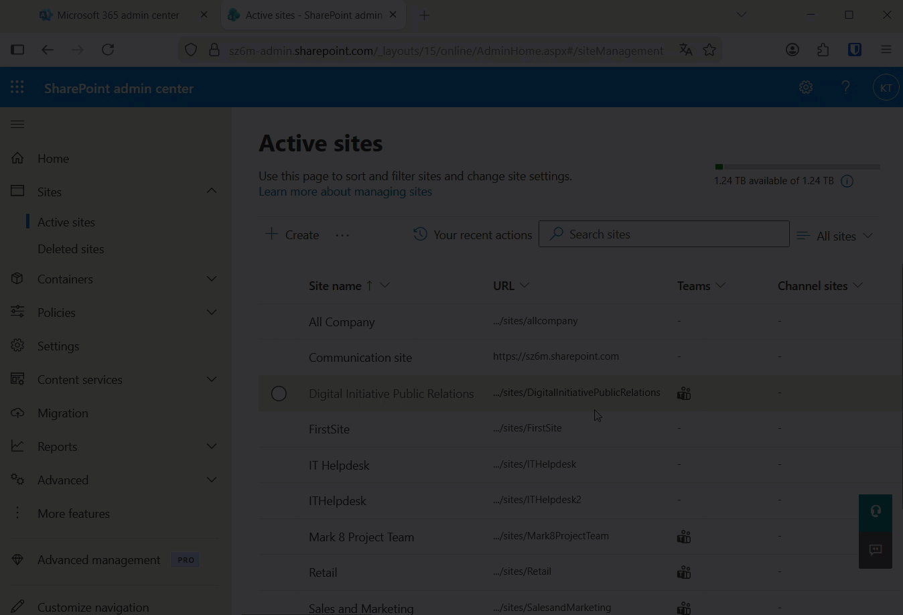
3. SharePoint-machtigingen
3.1. SharePoint-site
Je kan de machtigingen van een SharePoint-site in detail beheren met de volgende stappen:
- Navigeer eerst naar de SharePoint-site waarvan je de machtigingen wil beheren.
- Klik rechtsboven op het tandwielicoon (Settings).
- Selecteer Site permissions.
- Klik op Advanced permissions settings.
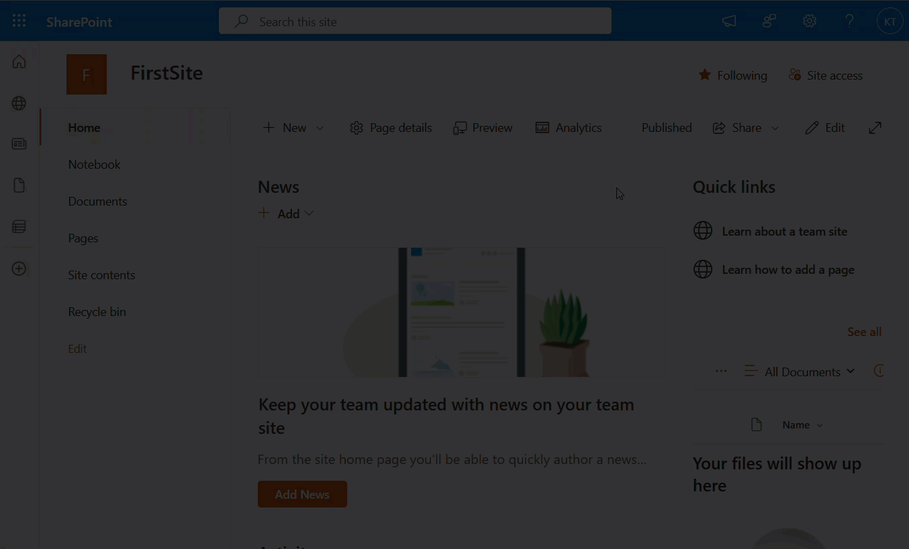
- Klik op de knop Grant Permissions.
- Zoek een Entra-groep.
- Klik op Show options.
- Selecteer de machtigingen die je aan de groep wil toewijzen.
- Als Send an email invitation aangevinkt is, ontvangen alle gebruikers in de Entra-groep een e-mail.
- Klik op Share.
De Entra-groep Lab_Users heeft nu leestoegang tot de site.
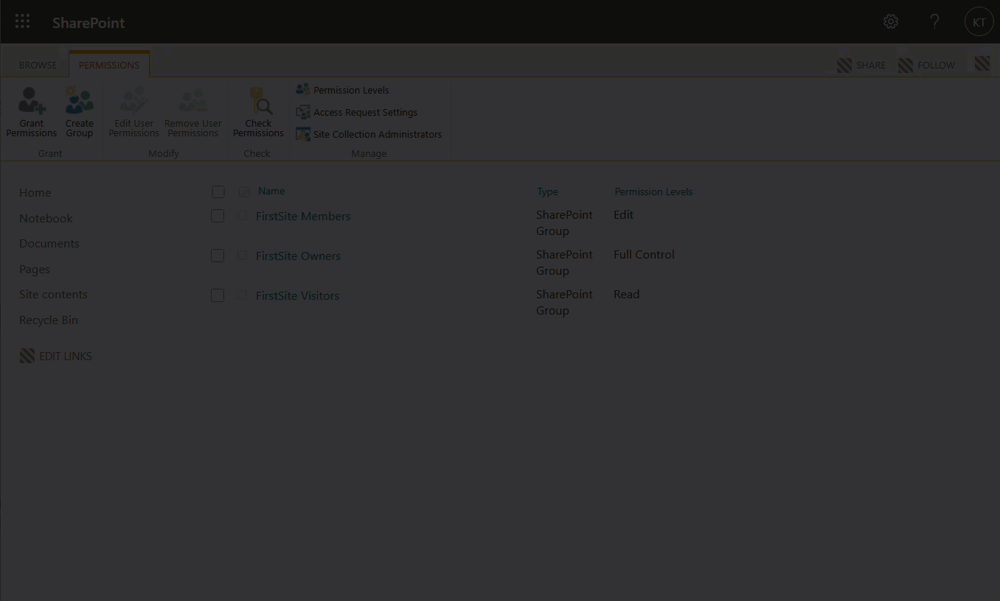
| SharePoint-sitemachtigingen | Beschrijving |
|---|---|
| Full Control | Geeft gebruikers volledige controle over de website. |
| Design | Laat gebruikers toe om items of pagina's op de website te bekijken, toe te voegen, bij te werken, te verwijderen, goed te keuren en aan te passen. |
| Edit | Laat gebruikers toe om lijsten te beheren. |
| Contribute | Laat gebruikers toe om persoonlijke weergaven te beheren, items en gebruikersinfo te bewerken, lijst-/documentversies te verwijderen en persoonlijke webparts aan te passen. |
| Read | Laat gebruikers toe om pagina's en lijstitems te bekijken en documenten te downloaden. |
3.2. Document library
Je kan document libraries aanmaken binnen een SharePoint-site. Een document library is een gespecialiseerde container om bestanden en documenten op te slaan, te organiseren en te beheren. Elke SharePoint-site wordt geleverd met een standaard document library: Shared Documents.
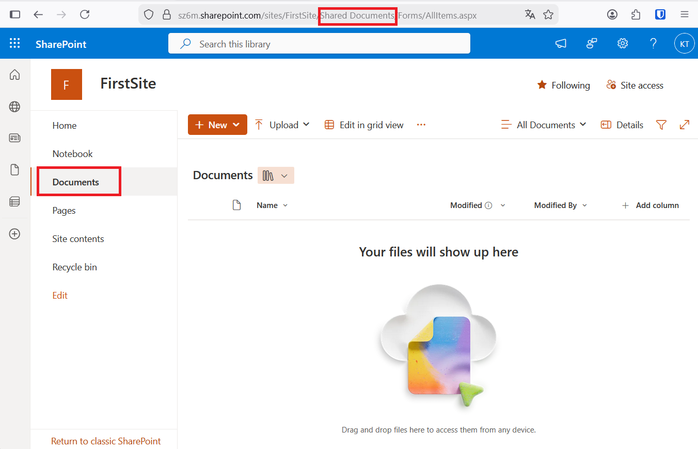
Je kan als volgt de machtigingen van een document library openen:
- Zorg dat je in de document library zit die je wil beheren.
- Klik rechtsboven in de library op het tandwielicoon.
- Selecteer Library settings.
- Klik op More library settings.
- Klik op Permissions for this document library.
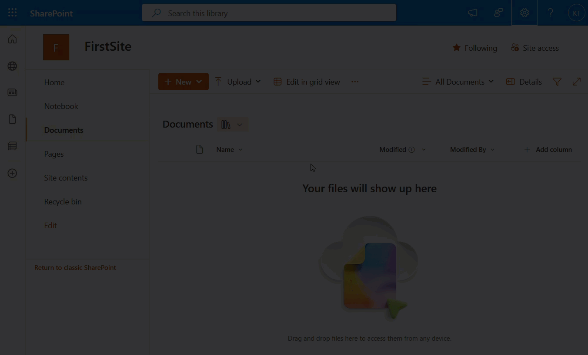
Klik op Stop Inheriting Permissions om aangepaste machtigingen voor de document library te kunnen instellen.
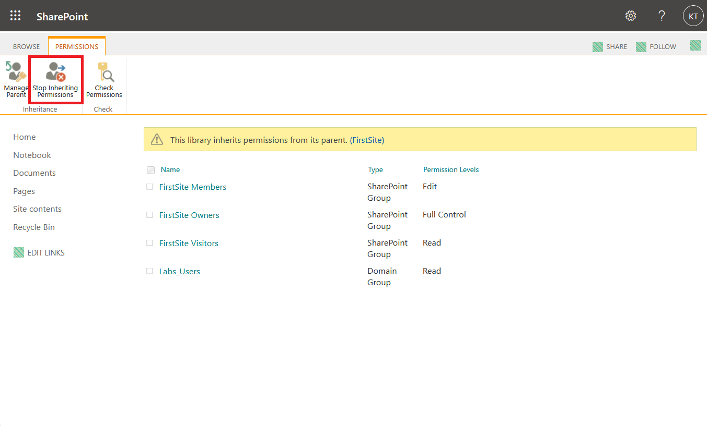
Klik op Grant Permissions om toegangsrechten aan gebruikers of groepen toe te wijzen.
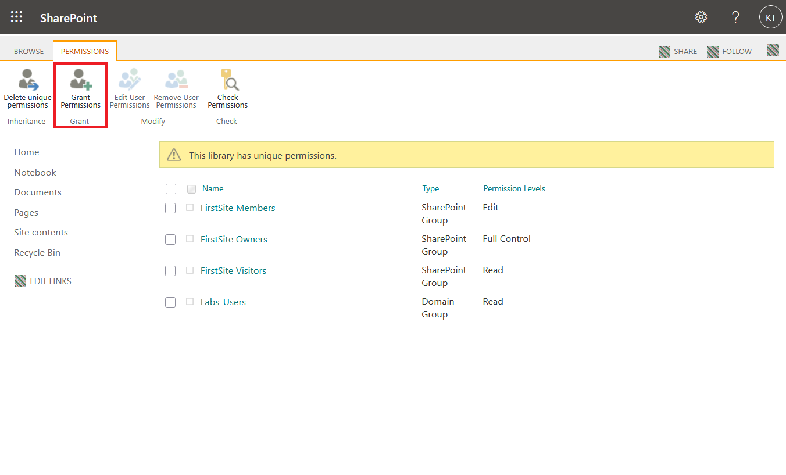
4. Kolommen
Elk document in een SharePoint document library toont metadata in de lijstweergave:
- Name: de naam van het document.
- Modified: de datum en het uur waarop het document voor het laatst is toegevoegd of gewijzigd.
- Modified by: de gebruiker die het document het laatst heeft gewijzigd.
Je kan ook extra kolommen toevoegen, bijvoorbeeld om een goedkeuringsworkflow te ondersteunen. Zo voeg je een nieuwe kolom toe:
- Klik op Add column.
- Selecteer de optie Choice.
- Klik op Next.
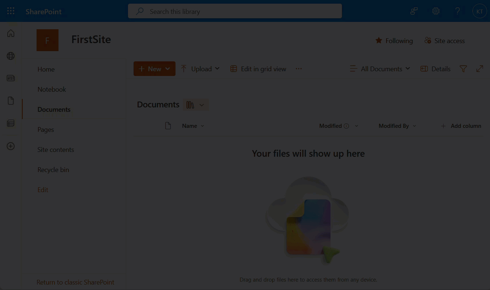
- Geef een Name voor de kolom in.
- Wijs aan elke optie een naam en kleur toe.
- Klik op Save.
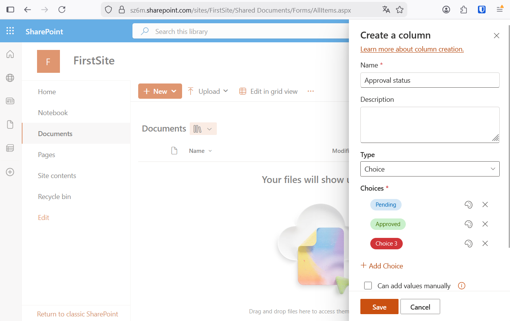